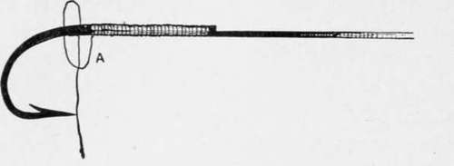
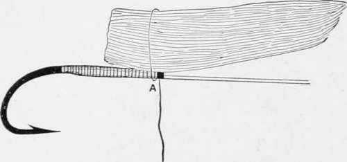
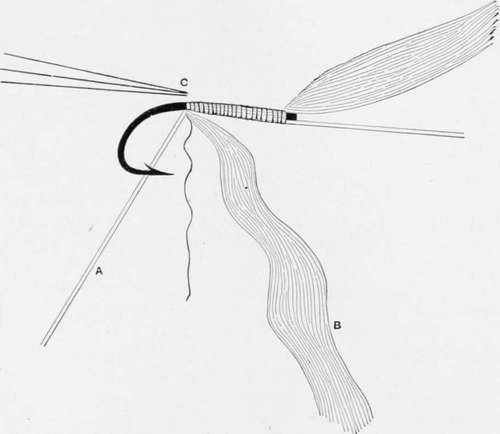
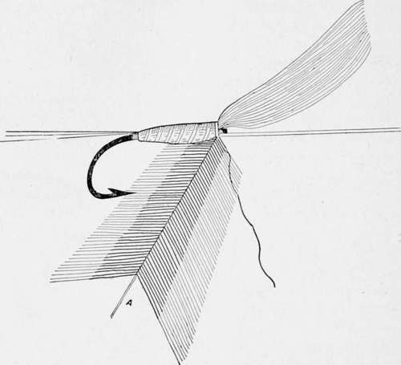

Fly-Fishing. Part 2
Description
This section is from the book "American Game Fishes", by W. A. Perry. Also available from Amazon: American Game Fishes: Their Habits, Habitat, and Peculiarities; How, When, and Where to Angle for Them.
Fly-Fishing. Part 2
This is the way: Fig. 24 represents the hook tied on and secured by means of a half-hitch (A). The tying silk is then run up by wide coils toward the end of the shank. Next, two slips of feather taken from two feathers from the right and left wings of a bird are laid on each other so that they are of one size perfectly. They are then taken between the left forefinger and thumb and arranged by side of the hook as shown in fig. 25. Whilst in this position the silk is passed round them (they are still lying flat) and as the finger and thumb grasps them somewhat tightly the thread is drawn tight and the ends are whipped down the shank as shown at fig. 26.
The next operation is to form the body. Suppose, for example, it is to be yellow silk ribbed with silver tinsel and brown hackle tail-the silver tinsel A is tied in first, then the floss silk (cable silk is good) B, and next the three fibers of cock's hackle at C, fig. 26. Then the silk is rolled up taper-ingly, and fastened off by the whipping silk ; then the silver tinsel is wound in wide coils for the ribbing, and finished off duly.
Fig. 24.
Fig. 25.
Now the fly lacks the hackle. This is attached in precisely the same way as in the case of the brown hackle (see fig. 27) and finished off. Then the wing is turned or reversed anG tied down. The end of whipping silk is clipped off, the head is touched with varnish, and your fly is done, and resembles fig. 16.
The foregoing terse directions form the foundation of fly-making. The angler who can make his flies from them has conquered the chief difficulties. All other flies are comparatively easy-in proportion to the amount of time expended in practice on these primary specimens.
Fig. 26.
A description of the flies represented on the colored plates may here fitly be introduced, and the more so because the majority of them are departures from the usual patterns.
Poor Man's Fly
Body, worsted or seal's fur; hackle, white; wings, gray turkey wing-feather.
Fig. 27.
Brown Squirrel Hackle
The body of this capital Bass and Trout fly is composed of a strip of brown or red squirrel fur; the hackle is a reddish-brown one from the game rooster; tail-fibers from ibis wing-feather.
Black June(Quill Body)
This is a new dressing of a favorite fly for Bass. The ordinary "Black June" is endowed with a peacock herl body, and this being frail, soon gets cut by the sharp teeth of the fish.
To obviate the danger of this, I make it of a strip of quill torn from the mid-rib of a crow's feather. (If I am making Trout sizes I get this from the red-winged blackbird.) The wings are double and water-proofed crow feather.
This water-proofing process for Bass and the larger Trout I conceive to be a great improvement. The feather is naturally held together by means of the clinging, hooked processes, to be found on the two sides of each fiber. These, however, are very feeble, as compared with the strength and ferocity of the fish, and ordinarily the first fish tears the wings into a straggling, shapeless mass. The semblance of a wing is hopelessly gone. Moreover, the feather gets water-logged and "soggy" and generally demoralized, so that the fastidious fisherman feels like putting on a fresh fly-especially if the quarry are not rising very freely.
My method of getting over this difficulty-to a very satisfactory degree, at all events-is to water-proof the feather precisely in the same way that water-proof sheeting is made. A water-proof preparation impregnates two surfaces of feather, and these are placed one on the other, and submitted to pressure. This forms one wing. The same process is of course necessary for the other, and thus four slips of feathers are used instead of two only, and they are rendered not less pliable, but tougher, and not likely to separate into fibers of independent directions at the touch of the fish. Moreover, the water cannot wet them through, any more than it can a rubber coat.
D.-Mouse-Fly.-Trout and bass will take mice, if the fish be large and the mice small. Some makers produce a pretty close imitation of the quadruped himself; but in the fly before the reader its color only can be said to be counterfeited. The body of this fly is of muskrat-fur, the end of body tipped red silk and tinsel. The wings are from the gray goose, or brant, and should be lead-colored dun in hue.
E.-White Moth, for Trout.-Body quill stripped from white dove's quill-feathers; ribbed yellow silk under quill; wings, white dove; hackle, white leghorn rooster.
F.-Fitz-maurice.-Body, black chenille, and red silk ribbed gold tinsel; tail, peacock fibers; hackle, yellow; wing, mallard breast-feather.
G.-Reuben Wood.-Tag, red silk; tail, fibers brown mallard; body, white chenille; hackle, brown; wing, mallard breast-feather.
H.-Straw Floater (Ephcmeridce).-This fly is an imitation of the May flies (Ephemeridae) and the body can vary in color according to the fly to be imitated. It is made of rye-straw, dyed and softened by soaking in warm water. A suitable length is then cut and placed round a hog's bristle to which has been attached the whisks to form the tail. It is then secured in place by the tying silk being wound spirally in loose coils around it and finally attached to the hook which has already been tied to the gut. The wings are commonly two small separate feathers of the mallard breast, and may be stained or not according to the necessities of the case. These flies float on the water and are very killing, being such close imitations of the natural insect.
Continue to: